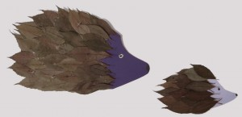

¡Estos erizos sólo están hechos con hojas!
Hedgehog made out of leafs.Igel aus Blättern.



El diseño es de Hannah. Las hojas del otoño, con agujero en forma de luna, se mueven en nuestra casa… Hannah made her own design. Leafs…
Leer más →
¡La familia puede ser de otra manera! Egghead The family in another way! Eierköpfe Die etwas andere Familie!
Leer más →
Collage de hojas Simplemente pega las hojas que has cogido en tu paseo en una hoja de papel. Collage of leafs Leafs we found on walk…
Leer más →
¡Una corona hecha sólo de hojas! A crown just made of leafs. Eine Krone nur aus Blättern.
Leer más →
Puedes usar una hoja del eukaliptus para escribir un mensaje y utilizarla como marcador de libro. You can make a bookmark out of a eucalyptus leaf.…
Leer más →
(manualidad niños hojas pajero) Sólo con hojas del eukalipto. A Peafowl with eucalypto leafs . Ein Pfau aus Eukalyptusblätter.
Leer más →